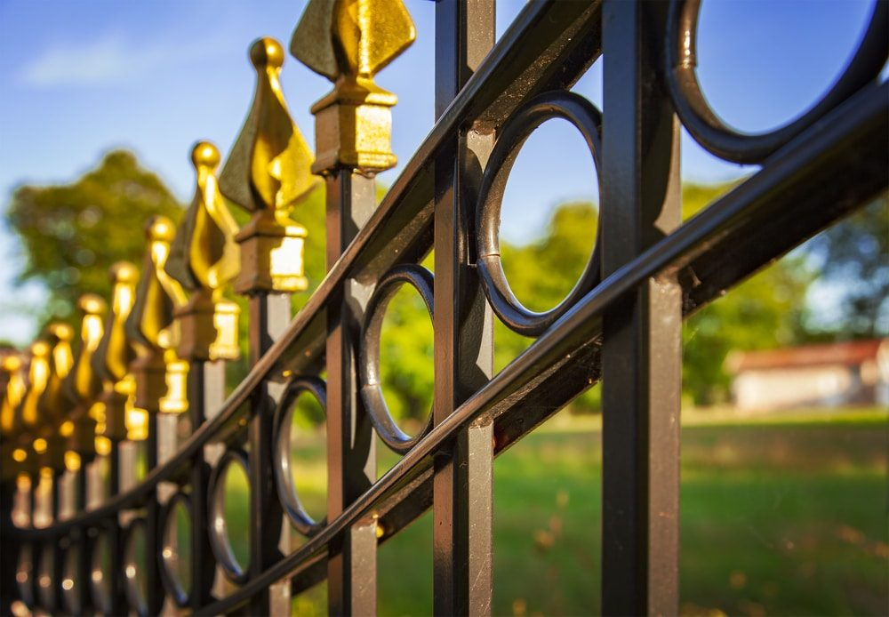

In This Guide
- Wrought iron, steel, and aluminum are all strong, secure, and good looking, but each one differs in weight, upkeep, and price.
- Wrought iron costs the most and needs regular rust checks. Steel needs a galvanized or powder-coated finish. Aluminum needs the least upkeep.
- Installation is a job for a crew: aluminum is lightest, while steel is usually welded for extra strength.
- Metal and iron fences give security and open views, but they do not give the privacy of wood or vinyl panels.
Choosing between a metal fence and a wrought iron fence sounds simple until you see how many versions of each one exist. Steel, aluminum, and iron all look sharp, hold up well, and add security, yet they differ in weight, upkeep, and price.
This guide from Big Easy Fence covers where these materials came from, what each one does well, and how to weigh installation, cost, and maintenance so you can pick the fence that fits your property and your budget.
A Short History of Metal and Iron Fences
Wrought iron fencing goes back to the Colonial era, when blacksmiths forged iron by hand to sit beside brick and stone houses. As more blacksmiths took up the work, more homeowners added ironwork to their properties. By the Victorian era, pickets, scrolls, and posts were being made in ornate patterns.
Authentic wrought iron is rare today. Mass production stopped long ago, and hiring a blacksmith to hand-make a fence is expensive. The usual route is to find salvaged wrought iron and reshape it into a new design. Most of what you will find in the market now is made from other iron alloys or from steel styled after the classic look, including Victorian-inspired patterns that suit almost any house.
What Wrought Iron Fences Offer
Traditional wrought iron fences are hard, sturdy, and very durable. Old buildings with ornamental ironwork still standing after generations show how well the material lasts. It is also softer than steel, so it bends and forms into detailed scrollwork much more easily.

Damage on an iron fence tends to show early. You can see where paint chips or rust starts, and you do not have to redo the whole fence to fix it. Scrape or sand the flaking paint from the affected spots, treat the rust, then add a rust-inhibiting coat and fresh paint over the repair.
What Steel and Aluminum Offer
Metal fences are just as sturdy and long lasting as wrought iron, and most of them fall into two groups.
Steel
Steel combines iron and carbon, which makes it very strong. Styles include tubular, steel picket, and color-bonded panels. It is heavier than other fence materials, yet it still follows uneven or sloped ground well. Galvanized steel and powder-coated finishes keep rust from forming, and that matters in humid Louisiana air.
Aluminum
Aluminum looks a lot like steel but is far lighter. It does not rust the way steel does, and it resists chipping, corroding, peeling, and cracking. When an aluminum fence finally comes down, the metal can be recycled, which makes it a practical choice for many owners.

Metal vs Wrought Iron: How They Compare
Strength and style are only part of the decision. Installation, cost, and maintenance often decide which one wins.
| Material | Strength and Style | Upkeep | Relative Cost |
|---|---|---|---|
| Wrought Iron | Very durable, with detailed scrollwork | Regular rust checks and touch-up paint | Highest of the three |
| Steel | Very strong, fits sloped ground | Needs a galvanized or powder-coated finish | Lower than wrought iron |
| Aluminum | Lightweight, resists corrosion | Lowest, with occasional cleaning | Lower than wrought iron |
Installation
Both types are best left to professional installers. Aluminum is lighter, so it takes fewer people to set, and some aluminum panels are assembled with locking screws. Steel is typically welded, which gives a stronger, longer-lasting result. Wrought iron falls somewhere in between and depends heavily on the design.
Cost
Wrought iron generally costs more than steel or aluminum, and custom or ornamental designs push the price up further. Steel and aluminum both come in many styles. Aluminum can be black, ornamental, or powder-coated, and it comes in privacy and pool-fence versions. Steel comes stainless, galvanized, corrugated, or in palisade styles. Because the range is wide, the only reliable number comes from a quote for your own fence length and design.
Maintenance
Wrought iron needs the most attention. The best defense against rust is a rust-proof coating, and a powder coat or fresh paint adds strength as well. Aluminum needs very little, and steel is fine as long as it is galvanized or powder coated so rust cannot take hold.
Both materials give strong security and clear sight lines, and they resist termites and most weather. The catch is that open pickets do not block the view the way wood or vinyl panels do.
Which One Fits Your Property
Both fence types have timeless looks that add curb appeal, and both give more security than wood or vinyl. Choosing between them comes down to what you need most.
- Choose wrought iron for detail. If ornate scrollwork and a traditional look matter most, and the budget allows, iron is hard to beat.
- Choose aluminum for low upkeep. It is light, resists corrosion, and asks for little more than an occasional wash.
- Choose steel for strength on uneven ground. It handles slopes well and offers a lot of style options once it has a protective finish.
A local fence contractor can look at your lot, your slope, and your budget, then point you to the right material. The full range of fence types is worth a look before you decide, and a free estimate will put real numbers on your top choices.
Not Sure Which Metal Fence Fits?
Tell us how you plan to use the fence and what your property looks like, and we will help you compare steel, aluminum, and wrought iron.